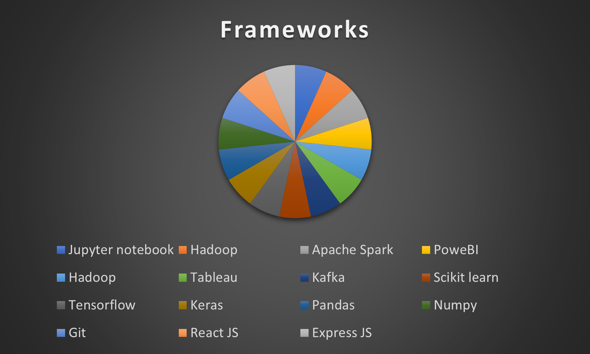

My Work
Breakdown of my skills.


Just call me awesome.
Resume
A draft from my CV
| Year | Title and Company name | Worked done |
|---|---|---|
| 2018-2019 | CTO / Founder at Data ka Info | Worked on multiple projects such as developement of a ResNet and PlainCNN based neural network architecture to increase accuracy of a malnoutrition detecting model. Developed a client landing page that lead to increase in clientel by 50%. Developed a financial credit rating webapplication to distinguish good customers from a bad one, decreasing percentage of defaulters by 20%. Generated automated reports in Tableau/PowerBI on top of insights obtained from machine learning algorithms. |
| 2016-2018 | Senior Research Analyst at Merit Software Solutions | Extracted, analysed, visualised, and reported on data and marketing insights on salesforce, supporting daily business activities. Oversaw daily operations of over 30 customer accounts with a combined annual budget of £100,000,000. Prepared End of day (EOD) report and communicated insights and findings from analysis and experiments to partners across organization through business intelligence software. |